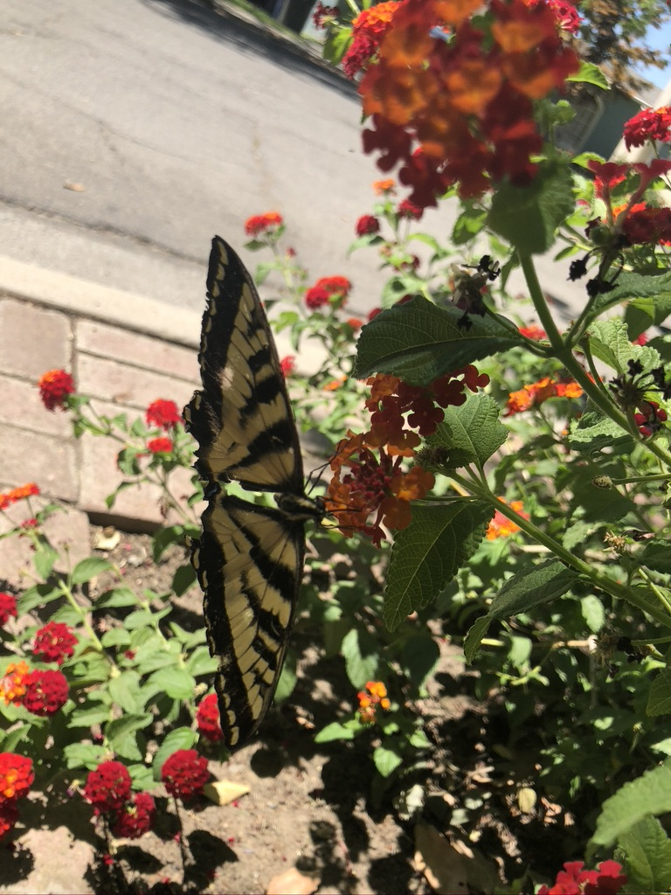
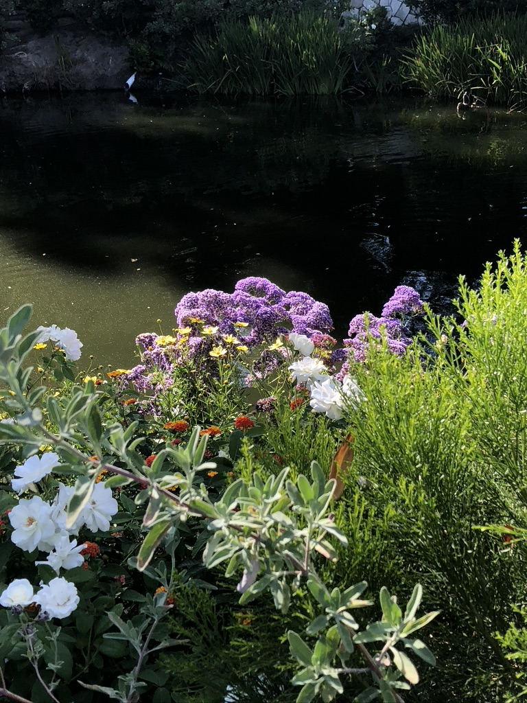
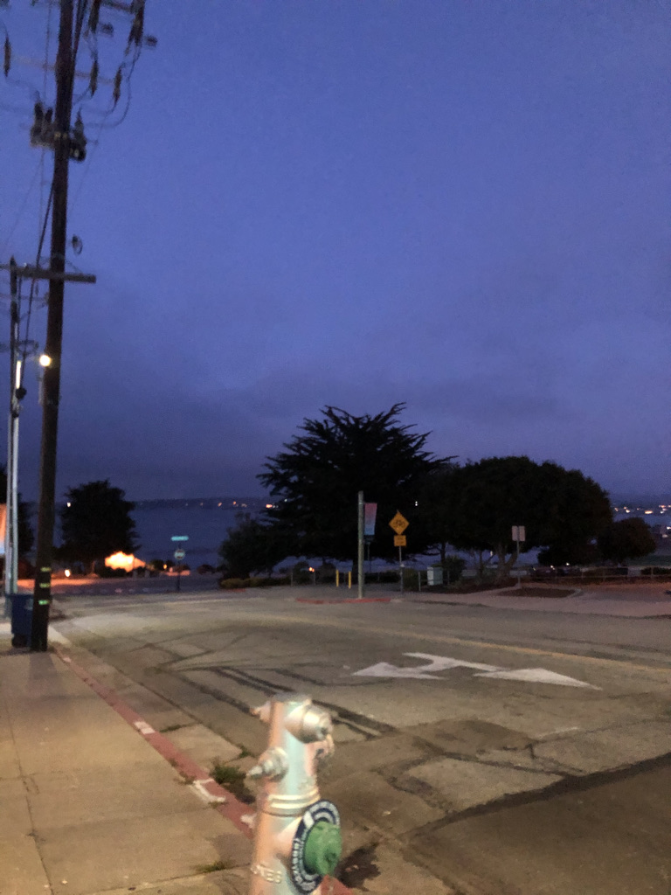

*•̩̩͙✩•̩̩͙*˚Hello World˚*•̩̩͙✩•̩̩͙*˚
★Introduction★
My name is Juliet Montelongo. I love bright colors (clearly). I also love music, art, cooking, nature, and more. Unfortunately I didn't work with a partner for this lab. Despite this, I really enjoyed this lab and I can't way to see the more intricate aspects of both html and css. I can't even imagine the amount possibilities there are with both of html and css!
★Pictures★
  I took these picture and I think they look pretty cool!
★Music★
I love music to my absolute core. These are the playlists that I have going constantly right now!